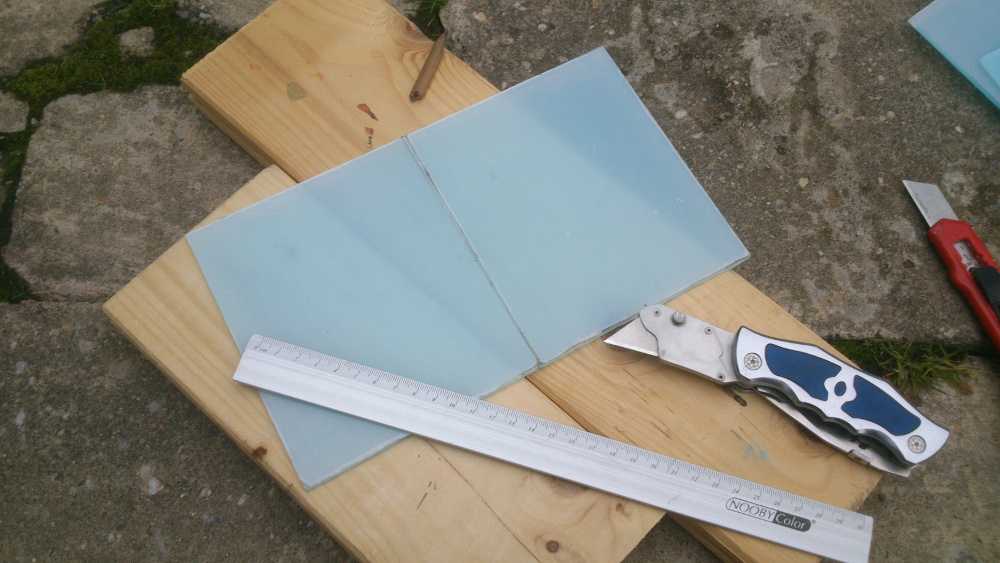
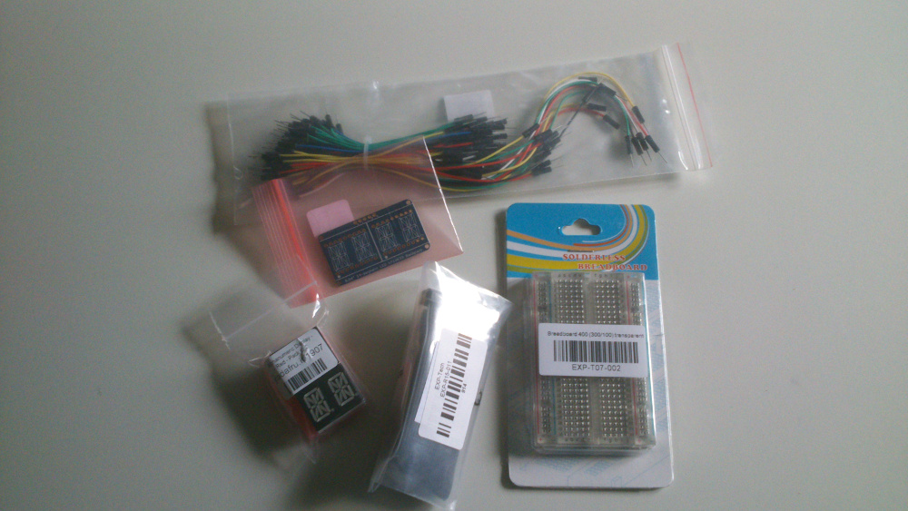
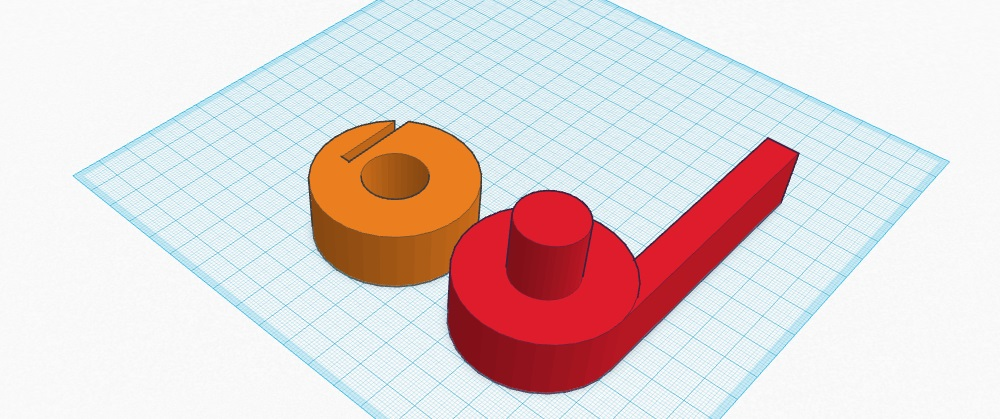
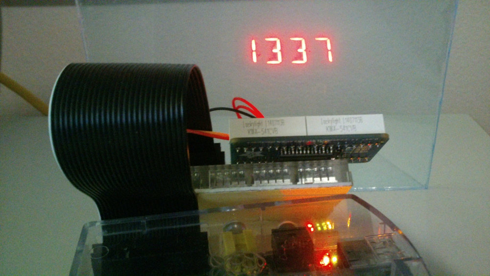

simpleHUD
A DIY HUD

A lot of accidents happen on roads, because the driver had to check the dials on the dashboard. Different studies show, that it takes up to 500 ms for the driver to refocus on the odjects ahead (That's about 180 m of extra breaking distance at a speed of 100 km/h). To tackle this problem you have to put the information in the direct view of the driver. Head-up-displays (HUD) are one way to do the trick by projecting a virtual image of important dials onto the road.
And of course it looks great and somewhat futuristic to have your windshield look like a spacecraft interior. So the main goal of simpleHUD is to provide a possibility to make your own HUD.
NOTE: Do NOT use a HUD in real traffic, especially in your field of view as a driver. Look up your country's regulation for this matter (e.g. in Germany it is prohibited by § 35b Abs. 2 in the StVZO).
If you decide to use acrylic glas, you will have to cut into the desired form and dimensions. I used 3 mm thick glas from a local handicraft shop for about 30€ per square metre. Thin acrylic glas has the advantage that it can be plied very easily. Just scarify the glas at the desired positions and break it along the scarified line. I prepared a 20 cm x 10 cm plate.
To inhibit reflexion of the light beam while entering the glass plate and creating a double image, you have to coat the back of it with a film. Luckily in my case the glas was already coated with a clear film.
I chose the adafruit Quad Alphanumeric Display for projecting the information onto the display, because it is very bright and of course it is compatible with the Raspberry Pi. Furthermore there is a beautiful library for python.
First I wanted a 3D print of my stand. So I decided to design a stand in Tinkercad.

Just to give you a glance of the whole thing:
